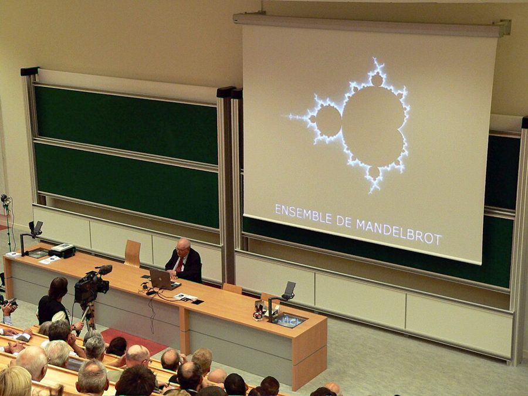

bonanza
… randomness, can lead to a bonanza.
（换来）一笔横财
原指富矿脉，引申为突然到手的一大笔好处。
一章很短的随笔，问的是：本事差不多的人，结果为什么天差地别？作者坐在里约的海滩上堆沙塔，从最后一粒沙讲起，接着是一屋子等试镜的演员、打字机的键盘、比尔·盖茨和微软、一个会「偏心」的抽球罐子，最后是一头站在草料和水正中间的驴。读的时候抓一条线：一点点差别，在什么情况下会被放大成天差地别。章名 Loser Takes All 是把俗话 winner takes all（赢家通吃）倒过来说的。
译本把章名 Loser Takes All 译成「輸家通賠」，意思反了：原文仿 winner takes all（赢家通吃），说的是输家（不配赢的那个）反倒通吃，不是输家全赔。
第 8、9 章讲我们只看得见留下来的赢家。这一章是第二部「打字機前的猴子」的第三章，换一个角度看赢家：就算本事一样，结果也会差得离谱。§3 作者回指幸存者偏差，§2 提到第 7 章讲过的帕斯卡，§5 回指第 7 章的 Popper 和第 3 章的蒙特卡洛。§7「我們的大腦」先提一句人脑和非线性合不来，第 11 章会专门讲人脑怎样看错概率。
§4 作者讲的键盘故事（为了放慢打字而设计、更好的键盘推不开），是当时经济学里流行的讲法。后来的经济史和键盘史研究对这两点都提出了有力的质疑。读的时候把它当一个流行的例子，详细的在页末。
本事差不多的人，为什么结果天差地别？
读的时候带着这几个问题。不用先找答案，读完回来对照「检查一下理解」。
这一章像一组短随笔，一节一个例子。§1 只有一句话立题。§2 是度假场景：作者在海滩上堆沙塔，顺手扯到混沌理论、蝴蝶和埃及艳后的鼻子，括号里还插一句自己站在哪位古人一边。§3、§4 是三个「谁赢了」的例子：演员、键盘、微软，末尾转述一位经济学家。§5 前半是一个抽球的数学模型，后半忽然转成对经济学用数学的一通批评，读到这里会觉得「突然跳了」。§6 是一串问题和名字：流行病、Google、幂律、Mandelbrot。§7 回到个人：念书和练琴，最后两句扯到他自己的交易。§8 又转了方向，从随机性的坏处转到它的好处，主角是一头驴。§9 是作者对自己成败的感慨。
这一页就是原书和译本的第 10 章，一共 9 节。粗体是本站给的节名，后面是档和译本字数；下面是译本的小标题和这一节在译本电子书里开头的几个字（搜它就能跳过去），再下面是英文原文的开头。「先读」是这一章的骨架，「有空」好看、跳过不丢线，「可跳过」读不读都行。读完打个勾。
先把这一页用到、作者默认你懂的几个概念讲一遍。讲的是概念本身，作者拿它推出什么，读原书时自己看。别页讲过的概念，点链接过去看。
线性是「投入多少，结果就多少」：多买一斤菜多付一斤的钱，画出来是一条直线。非线性就是结果和投入不成比例。常见的几种形状：门槛（水烧到 100 度才开，之前看不出变化），加速（复利越往后长得越快），饱和（广告投到一定程度，再多也没用）。
这一章关心的多是门槛这种：前面的投入看不出效果，再加一点点，结果突然全来，或者突然全垮。程序员熟悉的例子：服务器的负载升到某个点之前，响应时间几乎不变；过了那个点，请求排起长队，延迟一下子爆掉。作者把物理学的沙堆模型和混沌理论（起点差一点，结果差很多）都放在「非线性」底下讲，这两样在物理上其实不是一回事，见「书里的人和背景」。
在这一页：§2 用沙塔定义它；§3–§6 把它和随机性放在一起，看小差别怎样被放大；§7 用它讲念书和练琴，§9 讲作者自己的成败。
路径依赖：今天的结果取决于过去碰巧先发生了什么，而不只取决于哪个选项更好。一旦走上一条路，换路的代价越来越高，经济学叫「锁定」。铁路的轨距、某种编程语言的语法怪癖，当年随手一定，后来就很难改了。
网络外部性（也叫网络效应）是锁定的常见原因：一样东西对你的价值，随用它的人数增加。一个聊天软件有用，是因为你的朋友都在上面；一种文件格式通用，是因为大家都用它。用的人越多越值得用，于是用的人更多。经济学把这种「越领先越容易领先」叫收益递增。它让最后谁胜出，可能取决于很早的一点偶然，也让胜出的一方拿走不成比例的一大块。
在这一页：§4 的键盘和微软是作者举的例子，§4 转述的 Arthur 就专门研究收益递增；§3 演员的名气也是同一种自我放大。
标准的玩法：罐子里一红一黑两个球。每次随手摸一个，看颜色，放回去，再加一个同色的球。摸到红，红就多了，下次更容易再摸到红。抛硬币不一样：每次都是一半对一半，和以前抛出什么无关，统计上叫独立。坛子每一次的概率都由前面的结果决定，不独立。
本站算了一下：摸 98 次、罐里有了 100 个球时，红球占 1% 到 99% 的每一种结局都一样可能（数学上是均匀分布）；约两成的罐子里，一种颜色占了九成以上，落在四成到六成之间的也只有约两成。换成抛 98 次硬币，正面占九成以上或一成以下的可能不到一亿亿分之一，落在四到六成之间的约 95%。开局一模一样，差别全来自早期的运气。作者描述的是一个变体：猜对的概率随过去猜对的纪录变化。两种都是早期运气被放大。
钟形曲线（正态分布）描述的是身高这类东西：大多数人在平均附近，离平均越远越少，而且少得极快，没有人身高是平均的十倍。幂律描述的是另一类：城市人口、网站访问量、图书销量、个人财富。少数几个特别大，大量的特别小，「特别大」的可能性下降得很慢，一个最大的就能占总数的一大块。经济学家帕累托研究财富分配时发现过这种形状，所以也叫帕累托分布。
Mandelbrot 把钟形曲线那种叫「温和」的随机性，把幂律这种偶尔冒出一个极端值、而极端值能左右总数的，叫「狂野」的随机性。在狂野的世界里，平均数和波动都很不稳定，看再多历史也估不准。
在这一页：§6 作者问「临界点」是不是其实是幂律，又提到 Mandelbrot。作者后来的《黑天鹅》（2007）把这两种世界叫平均斯坦和极端斯坦。
按在书里出现的顺序排，标题前是节号。只讲到读懂这一页需要的程度。
物理学里的「沙堆模型」是 Per Bak 等三位物理学家 1987 年提出的：一粒一粒往沙堆上加沙，沙堆会自己长到一个临界的坡度，之后再加一粒，可能什么都不发生，也可能引发大大小小的崩塌。混沌理论讲的是另一件事：天气这类系统对起点极度敏感，差一点点，后来就差很多，「蝴蝶效应」就是它的比喻。帕斯卡（Blaise Pascal，1623–1662）是法国数学家、哲学家，克娄巴特拉的鼻子那句出自他的《思想录》。凯撒和安东尼都和这位埃及女王有过恋情；安东尼不是凯撒的继承人（凯撒指定的是屋大维），作者这里说得松。蒲鲁塔克是古希腊的传记作家，作者站在他一边，说她迷人靠的是谈吐。
Bel Air 是洛杉矶城西的一片豪宅区，好莱坞明星和富人多住在这一带。作者设想的结局两头：选中的搬进豪宅、买泳池；落选的在星巴克做拿铁，一边等下一次试镜。作者说我们平时看到的演员，都是赢了的那一小撮，这就是第 8 章的幸存者偏差。§3 的译本：「樣本歷史」是第 3 章的说法：同一个人可能走出的许多条路里的一条，见样本路径。
QWERTY 是键盘第一行左边的六个字母，用来称呼今天通行的排法。它来自 1870 年代 Sholes 等人设计、Remington 公司生产的打字机。1930 年代，美国教育学者 August Dvorak 设计了另一种排法，号称打得更快，一直没能普及。微软从 1980 年代起靠个人电脑的操作系统起家，作者写书时 Windows 和 Office 几乎装在每一台个人电脑上。比尔·盖茨（Bill Gates）是它的创办人之一。
瓦尔拉斯（Léon Walras）是 19 世纪的法国经济学家，用一组方程描述整个经济里所有市场同时供需相等，叫一般均衡，是经济学数学化的起点之一。德布鲁（Gérard Debreu）把一般均衡用严格的数学证明出来，1983 年获诺贝尔经济学奖。萨缪尔森（Paul Samuelson）1970 年获奖，是第一个获这个奖的美国人，他的教科书《经济学》让几代学生用数学和图表学经济。圣塔菲研究所在美国新墨西哥州，研究复杂系统：大量个体相互作用，整体冒出谁也没设计过的形态，从蚁群、免疫系统到市场。Popper 和「太把科学当真」见第 7 章的证伪。

《引爆点》（The Tipping Point，2000，译本：「引爆趨勢」）是加拿大作家 Malcolm Gladwell 的第一本书，讲流行、犯罪率、口碑这类东西怎样过了某个临界点突然扩散。Gladwell 2002 年在《纽约客》写过一篇讲作者本人的长文，作者在书后注里说，§7 Spitznagel 的那句比方就出自那篇文章。
§7 说的译本：「會因市場價格下跌而受益的證券」，最典型的是看跌期权：先付一小笔钱，换来在一段时间内按约定价格卖出的权利。市场不跌或只跌一点，这张期权几乎一文不值，钱白付了；跌过约定价格，跌得越多赚得越多。所以它平时毫无动静，到某个点才一下子值钱。期权本身见期权，这种常亏小钱、偶尔赚大钱的形状见偏态，罕见的大跌见稀有事件。《筷子》（Chopsticks）是 1877 年一位十六岁的英国女孩写的钢琴小圆舞曲，简单到刚学琴的孩子都会弹；拉赫曼尼诺夫（Sergei Rachmaninoff，1873–1943）是俄国作曲家、钢琴家，他的协奏曲以难弹出名。
驴的故事在布里丹现存的著作里找不到，是后人借他的名字讲的。更早，亚里士多德的《论天》里就有一个又饿又渴、站在食物和水正中间的人；作者用的正是这个又饿又渴的版本，更常见的版本是两堆一模一样的干草。至于装进袋子沉进塞纳河，是一个流传很广的传说（据说和王后有私情），15 世纪诗人维庸的诗里提过，没有可靠的史料支持，多数说法和已知的史实对不上。
读英文原文时值得停一下的词和句：作者的反话和自嘲、熟词生义、他的名句。灰色斜体是原句里连续的几个词，在英文电子书里搜它就能找到；标「每个字都认识」的，是每个词都眼熟、合起来意思却变了的，最容易读错。点「记下」收进词本。
对着译本读这一章时，下面这些地方会把人读歪。方框里是译本的原句，在译本电子书里搜它就能找到；灰色斜体是英文原文那一处。只收意思错了、反了、漏了的，措辞上的出入和台湾用语不收。全书的勘误汇总在译本勘误。
… fighting the biological clock between auditions.
译本：「調整生理時鐘」
fighting the biological clock 是和年龄赛跑：一次次试镜之间，人一年年老去，演员能演主角的年纪不等人。译本读来像在倒时差、调作息，丢了落选者处境里最残酷的那一层。
… is more than frequently the undeserved one.
译本：「最後勝出的結果如何當之有愧」
原文说研究者拿键盘说明：最后胜出的往往（more than frequently）是不该赢的那个。译本丢了「往往」，读来像作者断言胜者一律不配。他在这里留了余地。
… The example that strikes many as …
译本：「正是許多人都知道」
原文：在许多人看来，微软是最惊人的走运成功，说的是一种看法。译本写成许多人都知道它因为运气好而成功，把「靠运气」当成了公认的事实；作者接下来才自己论证盖茨配不配。
… unexpected orders, chance meetings with lawyers …
译本：「始料未及的次序」
Arthur 列的是生意场上的偶然：没料到的订单、碰巧遇见的律师、管理层一时的念头，这些小事决定谁先卖出产品、谁最后称霸。换成「次序」，这一串偶然就读不通了。
… The so-called complexity theorists came …
译本：「所謂的深奧理論家」
complexity theorists 指研究复杂系统的学者（复杂性科学），大本营就是同一段说的圣塔菲研究所。「所谓的」是原文就有的（so-called），再配上「深奥理论家」，读来就像作者在讥讽他们故作高深；其实他对这些人半是肯定，说他们在自然科学里做得很好。
… considered an example of sophistry by …
译本：「看成是喜歡詭辯的下場」
原文说：同时代的人没看懂随机化的意义，把这个故事当成诡辩的例子，所以作者说布里丹领先于时代。This tale 紧跟在死法后面，字面有点含糊，但后半句只对驴的故事说得通。译本加了「下场」，读来像他被淹死是爱诡辩的报应。
读完这一章再看。下面是作者在这一章里的主张，由本站按主张之间的逻辑重新组织，不按原书的顺序；每条后面是节号，拿不准就回书里那一节再读一遍。
他开门见山：一点小优势就能换来不成比例的回报；更「恶毒」的是，完全没有优势、只靠一点点运气，也能大发。他先用沙塔说明什么叫非线性：力一点点地加，结果却是一下子全垮。
§1 §2试镜室里人人有演技，被选中可能只因考官那天的心情，名气又因为别人已经知道他而越滚越大。键盘和微软也一样：人们用它，是因为别人在用。他承认盖茨勤奋聪明，但认为他不是最好的、赢得不配，并说胜出的往往是不配的那个。他引 Arthur：决定谁胜出的是偶然加正反馈，不是技术优势。
§3 §4他说常见的模型假设每一步独立，胜者愈胜的过程不独立，难用已知的概率数学处理，蒙特卡洛模拟却能在这里给出结果。他点名瓦尔拉斯、德布鲁、萨缪尔森：他们的数学太受限，还给人已经有解的错觉，也许（probably）干脆不用数学更好。网络和临界点也难预测，知道它们存在比给它们建模要紧。
§5 §6他说人的情绪按线性因果期待回报：天天用功，就该天天见长进。现实里回报常常一下子来，他借合伙人 Spitznagel 的比方：天天练琴，一直只会弹《筷子》，某天忽然能弹拉赫曼尼诺夫。他说确有不靠运气的成功之路，只是极少人有走完的耐力；他那一行里，有的证券到某个点之前也毫无动静。
§7站在草料和水正中间的驴，会因为选不出先去哪边而饿死渴死；随机推它一把，僵局就破了。他说人抛硬币做小决定、他自己在电脑做优化卡住时加一点随机扰动，都是这一招，布里丹的同时代人没看懂它。
§8合起来：结果的差别可以远大于本事的差别：非线性把小差别放大，运气决定谁先领先，自我强化把领先变成全部。看到大赢家，先别断定他最好；自己做事，别因为一时不见进展就放弃。
The twist: Life is unfair in a nonlinear way.— §1。本站译：翻一下新意：人生的不公平，是非线性的。
作者拿一句谁都说过的陈词滥调开刀，只加了一个数学词。关键是 nonlinear：他不是说人生全凭运气，而是说差别会被不成比例地放大，结果之间的距离远远超过起点之间的距离。译本：「人生的不公平是以非線性的方式進行」意思到了。容易被读成「努力没用」，§7 他自己就说有不靠运气的路，只是难熬。
better to be loved by a dozen than liked by the hundreds.— §9。本站译：宁可被十来个人热爱，不要被几百个人喜欢。
一句对仗的格言，loved 和 liked、a dozen 和 the hundreds 两两相对。这是作者对自己书和生意的观察，不是研究结论。它接的是 §3 的名气螺旋：热心的少数会替你传播，平平的好感不会。容易被读成「人数不重要」，他说的是热度比人数要紧。
这本书 2004 年出第二版，书里讲的多是 1980–2003 年的事。下面挑出这一页里能被后来的研究或事情检验的说法，分「书里 / 当时 / 今天」几栏，并给一个结论。结论判的是标题里「书里的说法：」后面那一句。全书的这一节汇总在今天怎么看。
读完作者的主张，再看它站不站得住。每一块摆出三样：主流怎么看，作者怎么看，本站的评论。最后一句是本站对这一页的总体判断。
主流看法：在网络效应强的市场里，早期的偶然会被放大，这是主流经济学接受的结论，Arthur 1989 年的论文就是代表。MusicLab 实验的作者之一 Watts 的总结是：在那个实验里，社会影响对热门歌市场份额的作用，和歌本身质量的差别一样大。
作者的看法：盖茨勤奋聪明，但不是最好的，也不配；大家用他的软件只因别人在用，从来没人说那是最好的产品。§4
本站的评论：机制是对的：网络外部性让领先者越滚越大，赢的规模远远超过本事的差距。但「显然不配」是断言，书里的理由只有一句「从来没人说那是最好的产品」：他没说谁更配，也没说「最好的软件」怎么量。他自己在 §7 也说有不靠运气的成功之路。更站得住的说法是：微软赢面里运气和网络效应的份量，比人们以为的大。
主流看法：波利亚坛子是概率论教科书里的经典例子，长期的红球比例有现成的公式（一红一黑开局时是均匀分布）；处理不独立的过程，概率论有马尔可夫链、鞅等成套的工具。Arthur 本人研究收益递增，用的也是数学模型。
作者的看法：胜者愈胜的过程不独立，数学上很难处理；瓦尔拉斯以来的经济学用的数学太受限，也许完全不用更好，蒙特卡洛模拟能在数学失灵时给出结果。§5
本站的评论：说不独立的过程难用已知的数学处理，是说过头了：这一页概念块里的数，一行公式就算得出来。站得住的是另一层：金融里最常用的随机游走模型确实假设每一步独立，用它看胜者愈胜的世界会看错。他推崇的蒙特卡洛也是数学，只是让电脑代替推公式。说也许不用数学更好，更像是对假装精确的不满。
主流看法：Kevin Kelly 2008 年的文章《一千个铁杆粉丝》说，创作者不需要百万观众，有大约一千个肯每年花钱支持他的人就能过活；这篇文章至今常被创作者引用，也有人质疑它算得太乐观。
作者的看法：宁可有一小撮热心的拥护者，也不要一大群只是欣赏你的人；这和常理相反，信息时代让它更明显。太成功和太失败都不好，他两样都不想要。§9
本站的评论：作者和 Kelly 的结论相通，理由不尽相同：Kelly 说的是铁杆粉丝直接掏钱养活创作者；作者说的是热心的拥护者（advocates），本站读作他们会替你说话、传播，推动 §3 那个「越被知道越被知道」的螺旋。说它和常理相反，今天在做内容、做产品的人里已经算常识。他最后说两样都不要，是一句真诚的牢骚，可在他描述的世界里，人恰恰没有这个选项。
本站的总体看法：这一章最该带走的是机制：非线性把小差别放大，随机性决定谁先领先，网络效应把领先锁住，MusicLab 一类的实验支持它。具体的例子要打折扣：键盘的故事有争议，说盖茨不配是断言。对数学的那段批评说过头，但别被精确的模型骗了，这层意思值得留下。
先在心里答，再点开。答错的那题，回书里把对应那一节再读一遍。
每一粒沙的分量都差不多，结果却不成比例：前面许多粒什么都没发生，最后一粒带来整座塔的倒塌。投入是均匀的，结果是突变的。
我们看到的只是赢了的那一小撮，在星巴克端咖啡的大多数看不见，这是幸存者偏差。名气又会自我放大，事后看，出名本身就像实力的证明。
不一定。它对你有用，主要因为别人都在用，这是网络外部性。这能让一个产品赢得很大，却说明不了它比对手好。
轮盘不会，每一次独立，概率固定。作者的罐子会：猜对的概率跟着过去的成绩走，赢了更容易赢，输了更容易输，所以结果分得很开，少数大成功，许多失败。
坛子约两成（红占九成以上、黑占九成以上各约一成）。硬币正面占九成以上或一成以下几乎不可能。坛子里早期的运气会被一直放大，硬币每次都重新来过。
两者的回报都是到某个点之前几乎没有动静：练琴可能很久不见长进，他持有的那种跌了才赚的证券可能长期不动。他说多数人在回报到来之前就放弃了。
两边一样近、一样想要，它找不出先去哪边的理由，于是卡住。随机推一把打破了对称。程序卡在两个一样好的选择之间时加一点随机扰动，也是为了不卡死在原地。
用一句话说这一页：
想一想：你学过的哪样本事（编程、一门乐器、一门外语），有过很长一段「好像毫无进步」的时候？后来是怎么熬过去的，还是在那时放下了？
读过又忘了，从这里想起来。挑的是这一页最值得记住的故事和说法，不按原书顺序；每条后面是节号，想细看就回书里那一节。全书各页的这一节都收在全书回顾。
一句话：小差别加一点运气，可以变成天差地别；赢了的那个，未必是最好的。
作者在里约的海滩上借小孩的玩具堆沙塔，一粒一粒往上加，想看多高会垮。最后一粒沙推倒了整座塔，旁边看着的小孩乐坏了。
§2一屋子演员等试镜，人人有演技。选中的搬进豪宅区，其余的在星巴克端拿铁。被选中，也许只因为考官前一天爱上了一个姓氏读音相近的人。
§3大家用这种键盘、用微软的软件，是因为别人都在用。作者承认盖茨勤奋聪明，但说从来没人说那是最好的软件。
§4作者讲的抽球游戏：猜对的概率跟着过去的成绩走，赢了更容易赢。轮盘赌不会这样。模拟出来，少数人大获成功，一大批人失败。
§5天天练琴，很久都只会弹《筷子》，某天忽然能弹拉赫曼尼诺夫。合伙人 Spitznagel 的比方，作者用它说多数人在回报来之前就放弃了。
§7一头又饿又渴的驴站在草料和水正中间，选不出先去哪边，就会饿死渴死。随机推它一把，它就能先吃后喝，或者先喝后吃。
§8